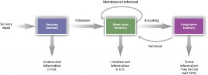

8.1: Introduction
Think back to your favorite birthday party. Where was it? Who was there? What did you do? Did you eat cake? Our ability to perform this task depends on creating, storing, and recalling memories. According to neuroscience, memory formation results from subtle changes among synapses distributed across several brain areas. Our capacity to learn new facts, recall recent events, or perform motor skills results from learning-induced neural plasticity.
The previous chapter covered neuroplasticity and how synaptic connections change with experience. This chapter explores how those changes translate into learning and memory. We’ll examine different types of memory, stages of processing (encoding, consolidation, storage, retrieval), and the brain regions and specialized neurons involved. We review some recent trends in research on memory reconsolidation that can help stabilize memories or even help dampen maladaptive memories as in post-traumatic stress disorder (PTSD). The chapter concludes with a discussion of memory-related disorders.
Memory is the capacity to encode, store, and retrieve information (Squire, 2009). Memory is a broad concept that includes many distinct types of memory, stages of processing, and neural systems. Before we dig into the biological psychology of memory, we introduce some terminology and ways to categorize memory.
Scientists characterize memory in many ways. Scientists talk about types of memory (e.g., semantic, episodic, procedural) that differ in the type of information that is stored (see next section). Memory can also be categorized in terms of the time-frame that information remains available. An influential model proposes three stages of memory: sensory memory, short-term memory, and long-term memory (Atkinson & Shiffrin, 1968; Figure 1). Sensory memory acts as a buffer for information received through the senses; the duration is very short (milliseconds or seconds). To illustrate, close your eyes; you briefly “see” a detailed image of what you were looking at; that is a visual sensory memory. Short-term memory (STM) and working memory last seconds to minutes and have limited capacity—typically 7±2 separate items (Miller, 1956). Short-term memory and working memory hold information temporarily and either discard it or move it to long-term memory. You can think of it like the content on your computer screen: that information is saved to long-term memory (hard drive) or discarded (delete the document or close the web page). According to the three-stage model, information moves from STM (working memory) into the third stage of memory, long-term memory (LTM). Long-term memory has very large capacity and these memories can last days, years, or decades. When studying for an exam, you are trying to consolidate or solidify that information in long-term memory.
Memory consolidation (i.e., making a temporary memory more stable and long-lasting) is supported by structural and functional changes to the neurons. In addition to consolidation, memory involves different processes, including encoding, storage, and retrieval. Encoding involves the input of information into the memory system. Storage is the retention of the encoded information. Retrieval involves recovering stored information from memory back into awareness.

Text Attributions
This section contains material adapted from:
Hedges, V. (2022). 66. Memory Systems. In Introduction to Neuroscience. CC BY-NC-SA 4.0 https://openbooks.lib.msu.edu/introneuroscience1/chapter/memory-systems/
Koenigshofer, K. A. (2024). Introduction to Memory and the Brain. CC BY 4.0. https://socialsci.libretexts.org/Bookshelves/Psychology/Biological_Psychology/Biopsychology_(OERI)_-_DRAFT_for_Review/10%3A_Learning_and_Memory/10.03%3A_Introduction_to_Memory_and_the_Brain
Lim, A., & Graykowski, D. (2021). Learning and Memory. In Open Neuroscience Initiative. CC BY-NC 4.0 https://static1.squarespace.com/static/56555dbee4b0f0c1a002808a/t/60537c185d98a2151537dbba/1616084000764/Open+Neuroscience+Initiative+-+Chapter+13+-+Learning+and+Memory.pdf
Spielman, R. M., Jenkins, W. J., & Lovett, M. D. (2020). Psychology 2e. OpenStax. Access for free at https://openstax.org/books/psychology-2e/pages/8-1-how-memory-functions CC BY 4.0
Media Attributions
- Memory Duration © Walinga and Stangor is licensed under a CC BY-NC-SA (Attribution NonCommercial ShareAlike) license
Short-term retention of incoming sensory information (e.g., sights, sounds, smells)
Temporary memory store that holds and processes information for a limited period of time
Memories that have become stabilized over an extended period of time (days, weeks, years).
Making a temporary memory more stable and long-lasting
The process of initially learning new information
Retention of encoded information
The process of accessing stored memories